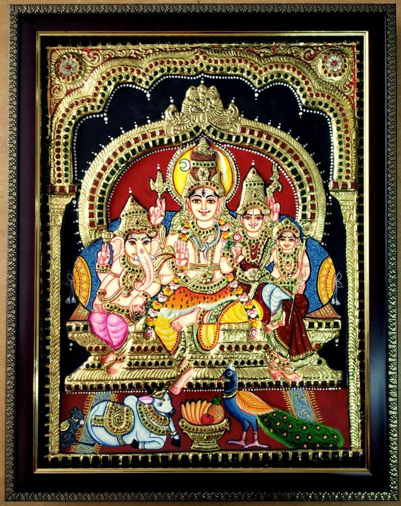

Thanjavur PaintingsPhoto: Shiva Family Tanjore Paintings Buy Lord Shiva Parivar Paintings · Source and licence
Thanjavur · Tamil Nadu
Seated Divine Family Tanjore Artwork
₹26,500
A large framed devotional tableau presented with temple-inspired ornament and a deep border. The scene is read as a seated divine family; the panel rewards a close look at the small figures, repeated motifs and careful colour placement. Traditional Thanjavur panels are prepared in layers, with relief ornament and fine brushwork creating a luminous surface. Keep framed work away from damp and direct sunlight. Prototype listing: price and dimensions are estimates for this project and must be confirmed with the maker before purchase.
MATERIALSWood panel, chalk gesso, pigments and gold-tone foil
TECHNIQUERelief work, foil detailing and fine brush painting
APPROX. DIMENSIONS75 × 95 × 6 cm (approx.)
AVAILABLE STOCK8 pieces
க
MAKERTN ARTISAN Studio
Thanjavur Paintings
Customer reviews
No reviews yet.